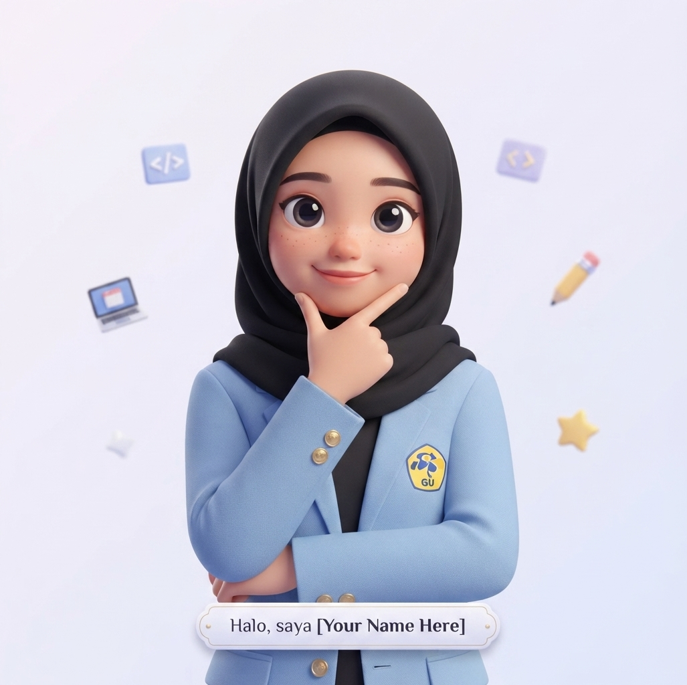
I'm a Cum Laude Applied Telecommunication Engineering graduate from PENS with experience in RF engineering, data analytics, data engineering, administration, Excel automation, and IoT. I've developed a passion for turning technical data and real-world problems into practical, user-focused solutions.
Get to know more about my background, education, and achievements
My background is in Applied Telecommunication Engineering, with hands-on experience in RF spectrum monitoring, administration, data visualization (Power BI, Tableau, Looker Studio), Excel automation, SQL, ETL, web development, and IoT. I enjoy building dashboards, monitoring systems, and data-driven applications that help organizations make better decisions—combining RF engineering, data analytics, and Web development to deliver impactful results.
GPA Score
Projects Completed
Certificates
Technical skills and technologies I've mastered
Explore my projects in Data & Administration, and Telecommunication & IoT
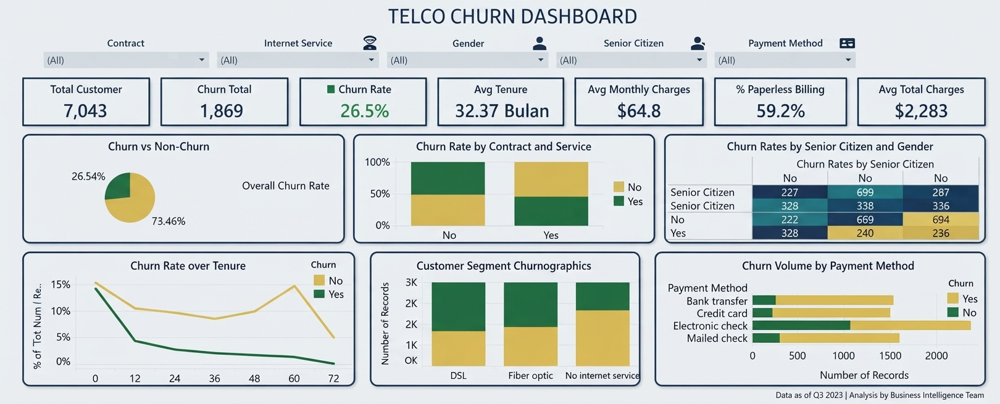
Interactive customer churn analysis dashboard built with Tableau for a telecommunications company. Features churn rate visualization, customer segmentation, demographic analysis, and key churn indicators to help identify at-risk customers and improve retention strategies.
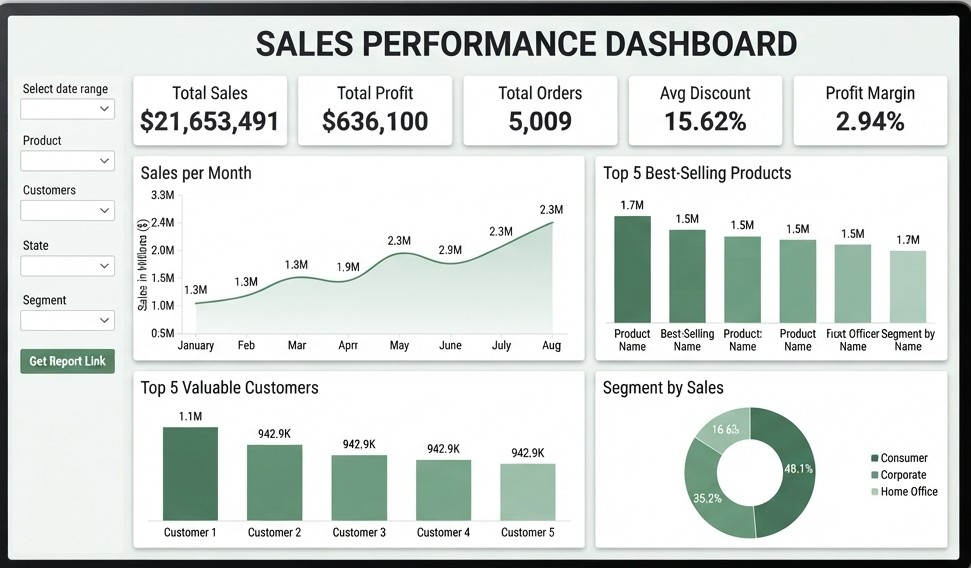
Comprehensive sales performance dashboard built with Google Looker Studio, featuring real-time sales data integration, revenue tracking, regional performance analysis, and automated reporting to support strategic business decision making.
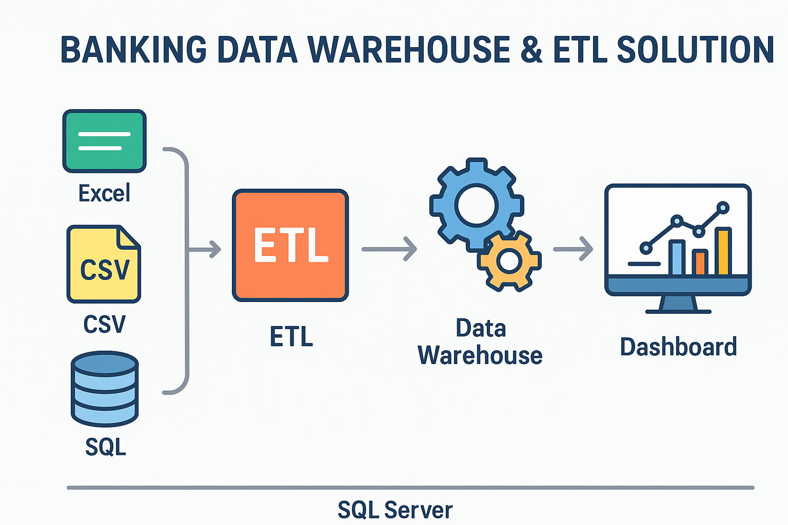
Built end-to-end ETL pipeline and data warehouse using Talend and SQL Server to unify multi-source banking data. Implemented transformation processes, quality checks, and reporting for financial decision making.
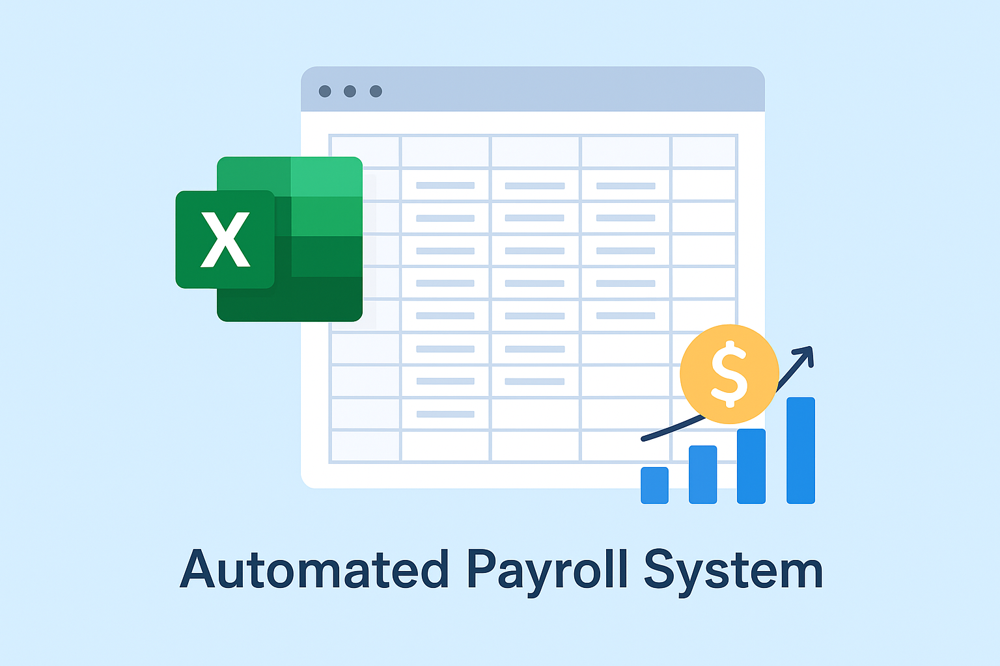
Created an automated payroll system in Excel with formulas for salary, overtime, deductions, and tax calculations. Designed for efficient employee payroll management with data validation and conditional formatting.
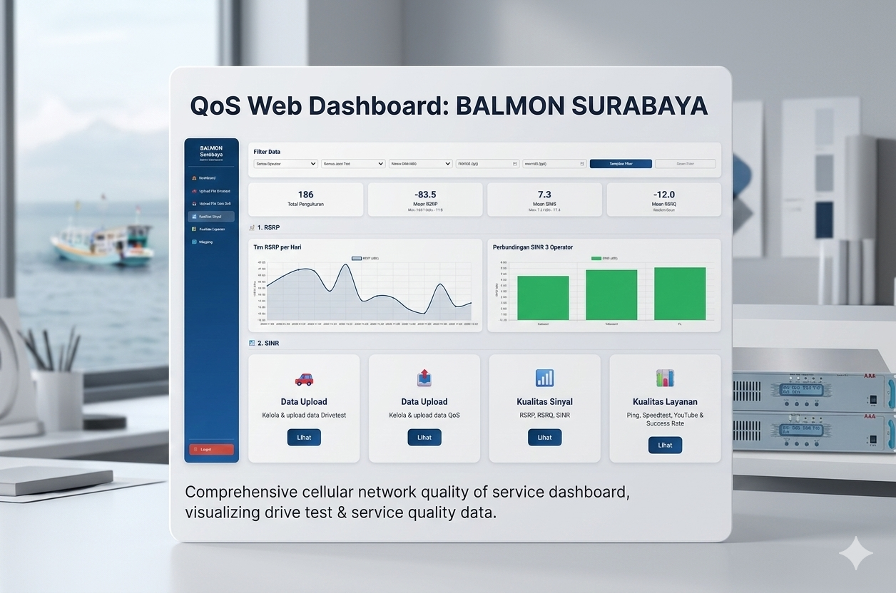
Developed a web-based dashboard for cellular QoS analysis using drive test data. Features Excel upload, interactive Leaflet maps, and visualization of RSRP, RSRQ, SINR, speed, and latency metrics.
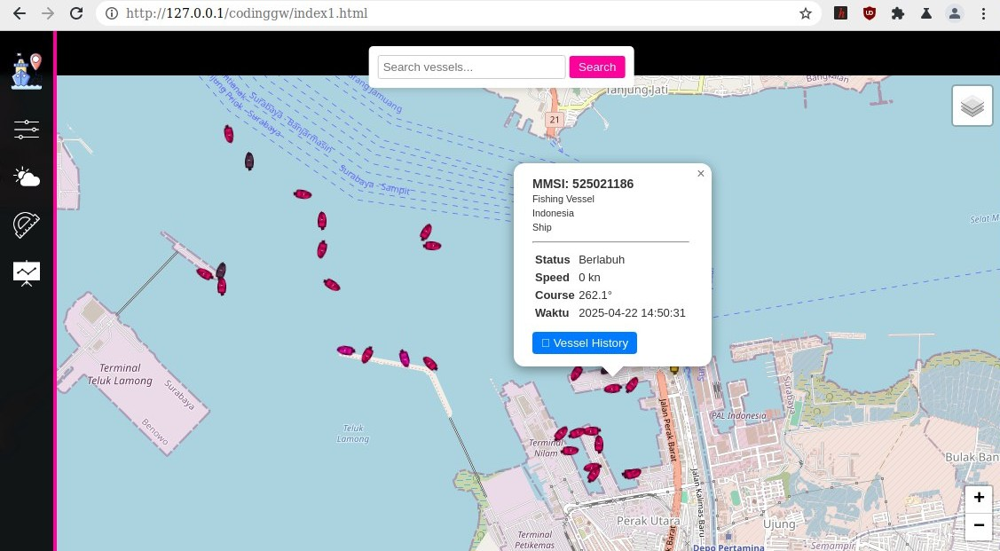
Deployed a vessel monitoring system using RTL-SDR and Raspberry Pi for AIS signal reception. Built backend with PHP & MySQL and frontend with Leaflet.js for real-time vessel tracking.
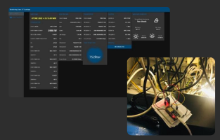
Designed and deployed a server room monitoring system for TransTV using ESP32 and environmental sensors. Implemented Node-RED and MQTT for real-time visualization and automated Telegram alerts.
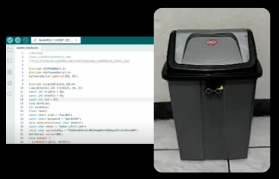
Built an IoT-based smart trash bin using Arduino, ultrasonic sensors, and servo motor for automatic lid opening. Designed to improve waste management efficiency through smart sensing technology.
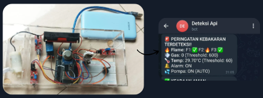
Built IoT-based fire detection system using ESP32, MQ gas sensor, and DHT22. Integrated automated water pump activation and Telegram alerts for rapid emergency response.
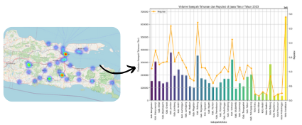
Implemented AI/ML models in Python to predict waste generation patterns in East Java. Supports sustainable waste management through data-driven urban planning and decision making.
My professional experiences
Assisting in radio frequency spectrum monitoring and management, ensuring compliance with telecommunications regulations, and supporting frequency allocation analysis using spectrum monitoring equipment. Conducting interference detection and resolution to maintain optimal spectrum utilization.
Built banking data warehouse and ETL pipelines using Talend and SQL Server, integrating multi-source data to improve reporting accuracy and operational efficiency. Implemented data quality checks and transformation workflows for financial analysis.
Monitored broadcast transmission systems, handled signal quality control, troubleshooting, and daily technical reporting to ensure uninterrupted broadcast services. Maintained equipment and coordinated with technical teams for issue resolution.